When entering the assignment mode, Gifa will set up an assignment environment with the basic menus, the Peak menus and 4 additional menus that give access to all the commands needed to performed spectral assignment. The macro env_att.g actually sets-up every thing for assignment..
This menu permits to create or select a project, and more generally to realize all the operations global to the project.
Produces a short help of the assignement module as a 'recipe' to use it. The complete assignment help contained in the HTML documentation can be called from this short help.
To create a new project. It will create a directory with all the empty data-bases. You will be also prompted for the primary sequence of the studied protein. The primary sequence can be given, either literally in 1 letter code, from a file (1 or 3 letter code), or from a PDB file.
Permit
to select any previously created project. Only one project can be used at a
time.
When selecting a project, you have the choice, in the dialog box, to either
create a backup of the current state of the project (simply a tar file), to
recover from a previous backup (thus deleting the current state) or not to do
any action.
After selection, the number of assigned systems is displayed on screen, then
the multi zoom tool and the File Selector tool are opened.
A
set of parameters is stored with the project, these parameters can be changed
from here.
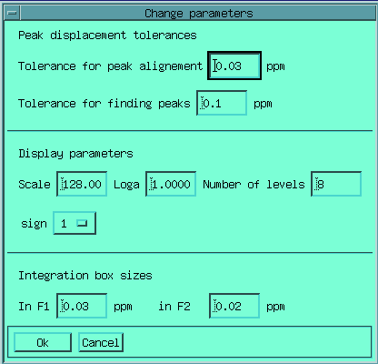
You can define :
The assignment data-bases are permanently kept on file, however, in case of a program crash, the last modifications may be lost. Clicking here secures the very last entries.
Copy the current backup file backup.tar to backup.tar.old, and store the current dbm files of the project in the archive file backup.tar, produced by the command tar.
Start
the File Selector box:
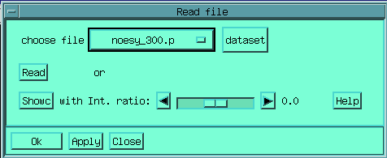
All the spectra which are used in the project should be accessed from here. A
spectrum can be loaded in memory, in the same time the associated peak
data-base is loaded. A spectrum can also be only showed (see the
SHOWC
command in the documentation), displaying it on screen, but not loading it in
memory, in which case the intensity ratio cursor permits to adapt the intensity
display to the current scale.
When loading a file in-memory, the related peak data-base is opened, and the
peak data base of the previously displayed spectrum is closed. if the file
loaded in-memory has no associated peak data base, a new one is created.
Note that you can also use the
super2d
tool (in the display menu) to display several spectra superimposed, by default,
in super2d, you will be prompt for using the last dataset used with the
Showc button.
From here, you can add a spectrum to the list of the currently used spectra. "Adding" a spectrum consists in either copying or linking it into the dedicated directory(see above, File set-up). Linking sets a UNIX soft-link which stores the address of the file only, thus permitting an important gain in disk space.
Permit to add a PDB file to the list of the currently used PDB files, in a way analogous to the way used for spectra (see the previous command 'Add spectra'). This PDB file list is used in the 'Find distance' command (see the utilities menu below).
Produce statistics on the amino acids contained in the primary sequence.
This
one permits to copy the content of the peak table (obtained with the Peak
picking tool) to the peak data-base. Peak will be there but without assignment
of course. This permits to load a first set of peaks, for instance the finger
print region, from which the assignment work can proceed.
This command can be issued several time and at any moment during the
assignment work, thus adding peaks into the assignment data-base.
Remove the unassigned peaks from the peak data-base. The unassigned peaks are those for which no spin has been assigned in F1 or F2.
Copy the peak data-base of a data-set of the spectra list to the peak data-base of another data-set of the list. The command asks for the permission to erase an already existing data-base.
Merge
the peak table with the peak database of the assignment projet.
For each peak of the peak table, the command looks at the closest element of
the database within the click tolerance and change the spectral coordinates and
intensity of this element to the peak coordinates and intensity. The assignment
information of the dbm element is unchanged. If no database element in found
within the peak tolerance, the peak is added to the data-base as an unassigned
element.
This
tool can be used when starting an assignment project for a protein for which an
assignment information is already available. The information can be either
available in BioMagResBank data format (seehttp://www.bmrb.wisc.edu/
) or in plain ascii format (see next menu entry)
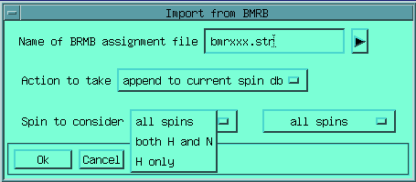
From there, you can specify the BMRB file name, the action to be taken (add to
the current db or start a new one), which spins should be considered : all,
1H and 15N or only 1H; and finally, if a check
on spin validity (checking if the spin name agrees with the names defined in
the topology file) should be performed.
From the file, only the spins and the spin systems will be defined. The peak db
will not be filled but will had to be filled independently (see below).
Same
as above, but in free ascii format. So far, only 2 file formats are handled,
both are one line per spin system, with the following formats :
format 1 :
primary_number res_name 15N_chem_shift Ha_chem_shift Hb_chem_shift, etc...
format 2 :
res_name primary_number 15N_chem_shift Ha_chem_shift Hb_chem_shift, etc...
where
etc.. represent the list of chemical shift given along the residue side
chain.
You can adapt this macro to fit your specific needs by modifying the
ascii2spin macro
This command takes the current spin-system and spin definitions, and create assignment peaks for each possible peaks for the current experiement.
This command will add the Integration menu which permits to quantify precisely one, or a set of experiments. Useful for quantifying a NOESY experiement, building build-up curve, and generating the constraints file for structure generation.
This command will add the Dynamic menu which permits to handle set of 2D experiment for relaxation measurements. Useful to realize the integration of a set of T1 or T2 heteronuclear or homonuclear experiments, and then to extract the relaxation parameters, with precise error estimate. Support for measuring heteronuclear J coupling is also available.
Use this entry if you want to quit the assignment module and restore a normal set-up
This menu permits to graphically display and to modify the assignment data-bases (peak, spin or spin system data-bases)..
This
command displays on the current spectral zoom all the peaks in the current peak
data base.
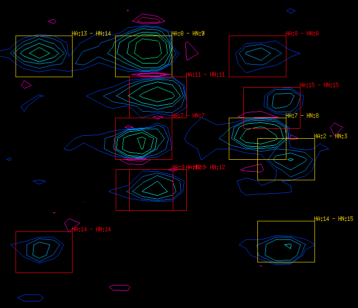
in this exemple red sqaures are intra-residue peaks and yellow peaks are
inter-residue peaks. Unassigned peaks are displayed as crosses.
Is equivalent to the previous command except that only the square will be drawn, thus making a display easier to read in the case of dense spectra. No color coding will be used either.
This command displays on the current spectral zoom all the unassigned peaks in the current peak database. The unassigned peaks are those for which the F1 or F2 spin has not been assigned.
This
command displays on the current spectral zoom all the peaks verifying different
criteria given by the user. Peaks can be displayed depending on the value of
the peak note, the spins notes, the residue numbers or types, the spin types
and the peak intensity (maximum value or threshold). The criteria for peak and
spin notes and spin types are tested as substrings of the peak.corresponding
parameters.
The criteria can be applied according to a logical parameter: 'and' means that
all the given criteria must be verified to display the peak, 'or' means that
one verified criterion is sufficient to display the peak.
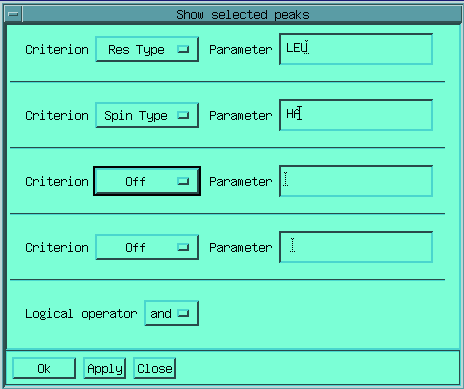
In the exemple above, only peaks were the H
of a Leucine is involved will be displayed
After selecting this command, the program will wait until you click on a peak on the spectrum, and will high-light the selected peak as well as print its id in the terminal screen.
As
the previous command, but an edition box for the selected peak will show up.
You directly see the content of the assignment data-base, and can actually
modify it. If the peak is already assigned, you will be able to see/edit the
corresponding spins.

You can also center the zoom window on that peak, move the peak (click on the
new peak location), and align the associated spins to that peak (remember that
chemical shifts are handled independantly in the peak db and in the peak db).
This command wait until you click on the spectral window, and creates a new entry in the peak data-base. If a peak already exists within the distance tolerance for the mouse clicking, the program asks to user a confirmation for creating the peak. The new peak is then edited.
After selecting this command, the program will wait until you click on the spectrum, and will propose spins close to the click points, indicated along which axis (F1/F2) they are found.
As
the previous command, but an edition box for the selected spin will show up.
You directly see the content of the assignment data-base, and can actually
modify it. Related peaks and spin system can also be edited.
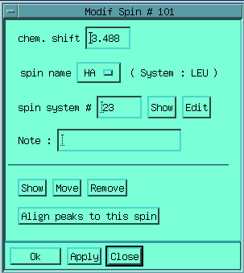
As for peak, you can move or remove the spin, you can also align all the peak
in the db to the current chemical shift of this spin.
After selecting this command, the program will ask you along which axis (F1/F2) you want to create a new spin. Then, it will wait until you click on the spectral window, and creates a new entry in the spin data-base. The new spin is then edited.
This
command produces a clickable list of all the spins in the data-base.
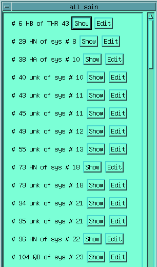
from there, you can either show or edit each currently defined spins.
After selecting this command, the program will wait until you click on a peak on the spectrum, and will high-light the related spin-system, if it exists.
As
the previous command, but an edition box for the selected spin system will show
up. You directly see the content of the assignment data-base, and can actually
modify it. Related peaks and spins can also be edited.
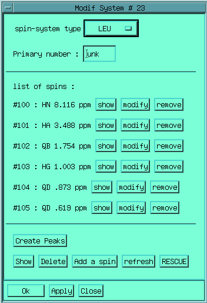
When the spin system type has been defined by the user, the list of possible
spin names is restricted to the list defined in the topology data-base. The
Create Peaks button, will create peaks at all the peaks in the peak db
that could exist at the spin crossing.
The Show button will graphically display the spin-system :
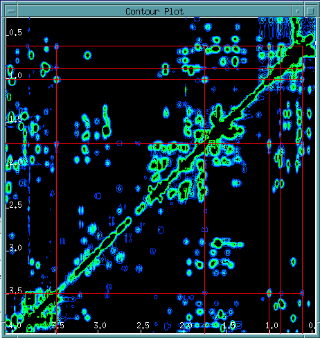
The button refresh close the opened system formbox, and open a new one
containing the last modifications.
The RESCUE button will trigger the Rescue computation, which uses a
neural network technology for searching assignment possibilities from the set
of defined chemical shift. Seehttp://www.infobiosud.univ-montp1.fr/SERVEUR/RESCUE/rescue.html
for details. The result in the present case would be:
Chemical Shift Input: 8.116:3.488:1.754:1.003:.873:.619 R.E.S.C.U.E. Software Result: --First Switch-- --Second Switch-- GROUP : SCORE | RESIDU : SCORE ---------------------------------------------- IL : 0.9302 | I : 1.0000 A : 0.0000 | L : 0.0000 G : 0.0000 | P : 0.0000 | T : 0.0000 | V : 0.1361 | KR : 0.0000 | AMX : 0.0000 | AMPTX : 0.0000 | S : 0.0000 | Result GROUP : IL RESIDU : I Reliability (%) : 61 : 45 ~~~~~~~~~~~~~~~~~~~~~~~~~~~~~~~~~~~~~~~~~~~~~~
Indicating
that the spin system is tentatively a Isoleucine or a Leucine, but with a not
so high probability, due to the non-zero response for Valine.
Rescue uses a a perl script located in /usr/local/gifa/com/rescue .
You will need perl v5.0 to use Rescue.
When you close the formbox (with the Ok button) , the program check
that the topology of the spin system is correct. IUPAC notation for spin names
is enforced.
This
command produces a clickable list of all the spin-systems in the data-base.
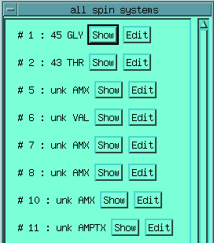
This command produces statistics of all the spin-systems in the data-base.
Permits
to click on the data-set, and search the spins located within the align
distance tolerance, in F1 and F2 axes. The spins names and information are
shown in a formbox, which allows to display and edit them individually.
Possible sequential match for dipeptides along the primary sequence are also
reported.
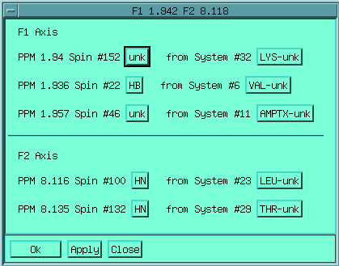
This
command draws the homonuclear NOESY walk in the HN-HN and the HN-HA regions.
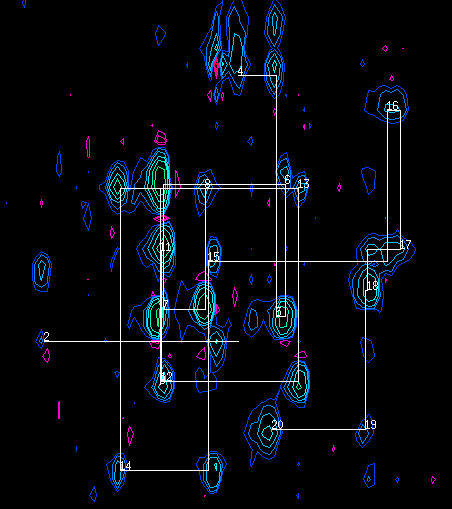
This command builds a form box, with one line per residue in the primary sequence of the molecule under study. Each assigned residue is associated to a button showing the corresponding spin-system on screen, and to another button allowing to edit it.
This menu contains all the basic graphics tool which are used to detect peak alignment and build new spin systems.
Most display command use a contrasting color (see SCOLOR in documentation). This utility permit to define which color will be used.
This is equivalent to the standard point macro : you can click on the current spectrum, and the coordinates of the clicked point are printed, and a cross is drawn at the click point location. You exit the point command by clicking on the third button of the mouse.
This
is the main tool for detecting peak alignment and for building the build list.
When activating the command, you are prompted to click on each spectral
location that you want to put in the marker. When finished, click on the third
button of the mouse. A box is then created, which will remain on screen as long
as you do not close it purposely.
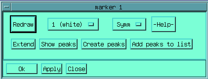
From the marker box you can choose to redraw all the horizontal and vertical
lines connecting the selected points. You can choose to have
diagonal-symmetric locations considered or not, and choose the color. You can
extend the current marker, clicking on new locations on the spectrum, this will
create a new marker containing the new locations as well as the previous ones.
You can show all the peaks in the data-base lying at the intersection of an
horizontal and vertical lines, as well as create missing peaks. Finally, you
can add all the peaks detected at the intersections to the build list.
This command empties the build-list, which contains peaks.
This command simply prints the content build-list, by showing the id of the peaks in the build-list..
This will display on the spectral window, the peaks in the actual build-list.
Permits to add a peak to the build-list.
This
is the command that will use the actual build list, and create a new
spin-system. First, alignment are detected within the peaks in the build list,
and spins are detected for each spectral coordinates. If needed, new spins are
created. Then a new spin system is created.
Finally, the tool permitting to edit the spin-system is opened from which you
can modify the spin-system parameters and edit each individual spins.
This menu contains various utility commands, which allow to chck the integrity of the current assignment state, its consistency with structural information obtained from a PDB file. These conmands also permit to output assignment information.
Checks all current assignment data-bases for integrity. Because of a bug in the foreach code, this command may have to be applied more than once in case of wrong entries. In particular, this command checks the consistency between the chemical shifts of the spins assigned to a peak and the chemical shifts of this peak. It also checks for internal coherence.
Check that all spins of each spin system are defined in the current topology database. The topology data base file is located in the /usr/local/gifa/macro/att directory. For each spin system type, it contains the allowed list of spin names, including the individual hydrogen names and generic names for superposed geminal hydrogens. This file can be modified by the user to fit other topologies (see macro programming).
Creates a formbox which permits direct editing to each spin, syst and peak, according to their index in the data-base.
This
command permits to click on the spectrum, and high-light the closest peak in
the database. Then, it creates a dialog box to look for the distances between
hydrogens involved in the selected correlation. The PDB files you can scan are
given by the PDB file list.
You can select atoms by their exact names or by a substring of their names (as
an example, looking for the 'HB' substring will permit to find all the
hydrogens HB1, HB2, HB3,...). If you want to search among all the residues or
all the atoms, put the sign '.' into the corresponding field of the dialog
box.
This command is based on a perl script calcdst.pl located in
/usr/local/gifa/com/att directory.
Lists all the peak database entries to a file. Here is un example of listing file:
# Project : /d1bis/people/terez/ranab # Experiment : spectra/proc.05 # F1 F2 Spin1 Spin2 Amplitude Peak# (Note) 0.282 4.855 unk unk 476142 151 0.900 1.266 HD-20 QG-20 2597383 443 0.900 4.223 HD-20 HA-20 682930 442 0.923 0.912 HG3-7 HG3-7 356122080 430 0.923 1.267 HG3-7 HG2-7 3268115 369 0.923 1.531 HG3-7 HG1-7 2074078 336 0.923 1.886 HG3-7 HB-7 1735731 306 0.923 4.213 HD-7 HA-7 919385 178
Lists all the spin database entries to a file. Here is un example of listing file:
# Project : /d1bis/people/terez/ranab #PPM Name System Spin# (Note) 1.014 HG 15 63 1.083 HG 8 37 1.255 HG1 7 30 super with ILE 13 1.266 HG1 20 79 1.473 HB 11 48 1.664 HB 21 83 super with HG LEU 5 1.728 HB2 22 88 super with HD1 Lys 19 and 18 1.771 HG 16 67
Lists all the spin system database entries to a file. Here is un example of listing file:
# Project : /d1bis/people/terez/ranab 2 LEU ------ 8.784 HN 10 ------ 4.456 HA 10 ------ 1.654 QB 10 super with HG Leu 2 ------ .946 QD 10 3 GLY ------ 8.441 HN 17 ------ 4.017 QA 17 4 GLY ------ 8.399 HN 18 ------ 4.051 HA1 18 ------ 3.979 HA2 18 5 LEU ------ 8.324 HN 21 ------ 4.418 HA 21 ------ 1.664 QB 21 super with HG LEU 5 ------ .969 QD 21
Lists all the assignment entries to a file. Here is an example of listing file:
# Project : /d1bis/people/terez/ranab 1 F assigned to : 1 Arom-Phe 103 104 ------ 7.458 3H 26 ------ 7.348 2H 26 1 F assigned to : 1 PHE 101 119 ------ 4.344 HA 25 ------ 3.261 QB 25 2 L assigned to : 2 LEU 42 43 44 45 ------ 8.784 HN 10 ------ 4.456 HA 10 ------ 1.654 QB 10 super with HG Leu 2 ------ .946 QD 10 3 G assigned to : 3 GLY 68 69 ------ 8.441 HN 17 ------ 4.017 QA 17
Plots on file the labels of the elements of peak current database, which are located in the current zoom window.
Plots on file only one peak label, usefull for annotating only a few peaks on the plot.
This command permits to recalibrate a given experiment (change the definition of the 0 ppm point) while maintaining the position of the peaks. Indeed, peaks are handled in ppm, so recalibrating the experiemnt without taking care of the peaks would end-up with peaks db entries not located anymore on the corresponding spectral location.
This
command permits to build a composite 2D strip-plot file from a 3D HSQC
experiment, much in the way the related command in the 3D module would do.
However here, the strip plot is build from the current assignment databse as
would be defined for a 2D HSQC. Strips will then be ordered in the pseudo F2
axis in primary sequence order.
Plots on file only one peak label, usefull for annotating only a few peaks on
the plot.